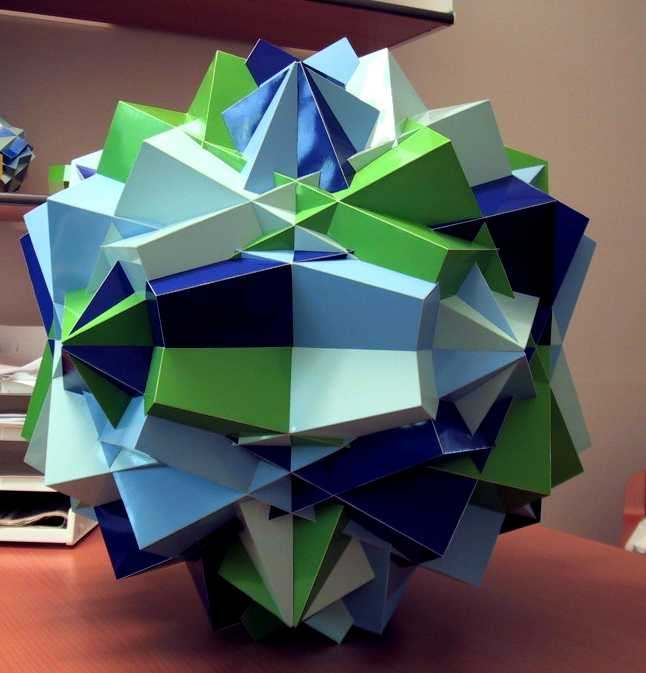

Compound of 4 Classic Compounds of 3 Cubes

For several years I had been walking around with the idea for this model, when I finally had enough time to develope it somewhere in the year 2000. With help of an algebraic system it took me something like 3 months to calculate the things I needed, and to write the documentation. Building took me 5 months...I should say 4 months, because I had a break of one month when I was half way.
The whole model is a compound of 12 cubes with four colours. The model belongs to the symmetry group that contains all the rotations of the tetrahedron and the central inversion, indicated by Coxeter as A4 x I. Each colour forms a compound of 3 cubes. These compounds are the Classic Compounds of 3 cubes and belong to the same symmetry group as the cube itself. It is a special position of a compound of cubes that has spherical freedom and it is indicated by A4 x I / E x I, i.e. none of the cubes share a rotation axis or a reflection plane. I guess there is a similar compound that consists of 3 Bakos' compounds, but I don't know how to find it.
Another special property is that you'll get a Trapezoidal Icositretrahedron, which is the dual of a Rhombicubocatahedron, if you take one sort of pairs of parallel squares.
This model was destroyed by my kids in 2013, after I allowed them to play with it. The model was too big and I didn't really like it. The pieces were used for building other models later.
Last Updated
2024-04-21